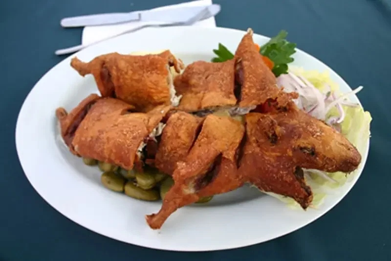
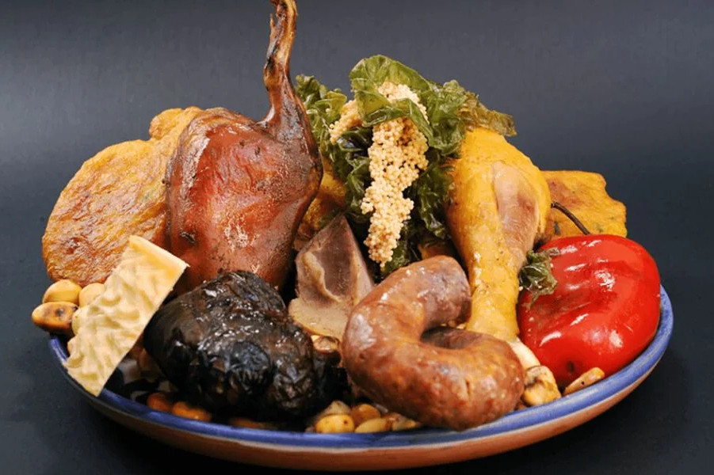
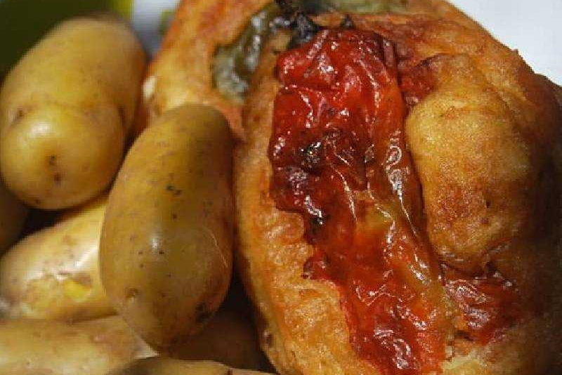
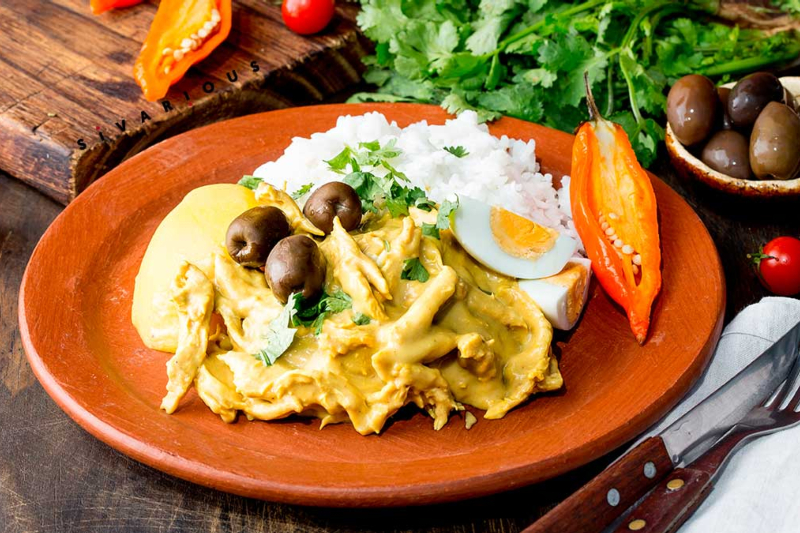
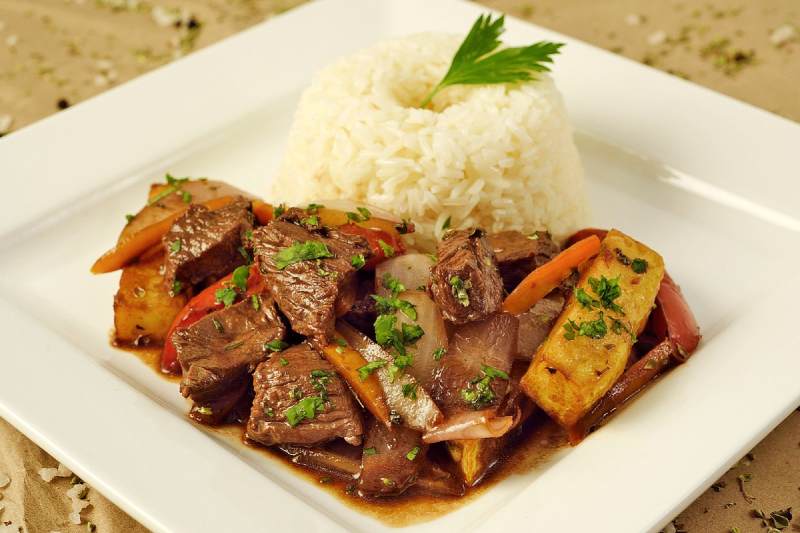
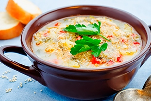

Cada plato cuenta una historia, cada bocado es un viaje a nuestras raíces

El cuy es un alimento sagrado desde la época de los Incas, reservado para ceremonias especiales y rituales andinos. Su crianza se remonta a más de 5,000 años en los Andes peruanos.
Servido en ceremonias incas
Alto valor nutricional
Chactado en piedra caliente
"El cuy chactado es el sabor más auténtico del Cusco, crujiente por fuera y tierno por dentro"
- Chef Ejecutivo"Chiri Uchu" significa "ají frío" en quechua. Es el plato estrella del Corpus Christi en el Cusco. Su origen se remonta a la época colonial, donde se fusionaron ingredientes andinos y españoles.
Corpus Christi en Cusco
Cuy, gallina, cecina, chorizo
Único en su estilo
"El Chiri Uchu es la fiesta hecha plato, cada bocado es una celebración"
- Tradición Cusqueña

Nacido en los Andes del sur peruano, el rocoto relleno es un símbolo de la fusión andina. Su picor es equilibrado con un relleno de carne y queso que lo hace irresistible.
Se desviene para suavizar
El toque cremoso perfecto
Cultivado en el valle
"El rocoto relleno es picante como el amor, pero dulce como el recuerdo"
- Sabiduría PopularNacido en la época republicana, este plato fusiona la gallina criolla con una crema de ají amarillo, nueces y queso. Es el abrazo cálido de la comida peruana.
Espesante natural y sabor único
El toque de los Andes
El alma del plato
"El ají de gallina es un abrazo en forma de plato, suave y lleno de sabor"
- Abuela Elena

El lomo saltado nació de la fusión entre la cocina peruana y la china, creada por inmigrantes cantoneses. Es el plato más representativo de la cocina "chifa" peruana.
Técnica cantonesa milenaria
El toque peruano único
Frescura y color
"El lomo saltado es el hijo perfecto del encuentro entre Perú y China"
- Historia GastronómicaUn vistazo a nuestros platos más representativos
